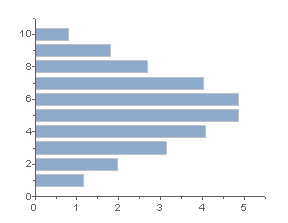
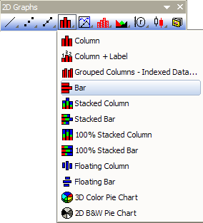
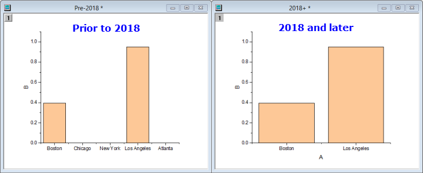

Balkendiagramm
Bar-Graph
- 
Datenanforderungen
Wählen Sie eine oder mehrere Y-Spalten oder einen Datenbereich aus mindestens einer Y-Spalte aus. Wenn es eine verbundene X-Spalte gibt, stellt die X-Spalte die X-Werte bereit; ansonsten wird ein Abtastintervall der Y-Spalte oder Zeilennummer verwendet.
Diagramm erstellen
Wählen Sie die gewünschten Daten aus.
Wählen Sie im Menü .
oder
Klicken Sie auf die Schaltfläche Balkendiagramm in der Symbolleiste 2D Grafiken.
- 
Vorlage
BAR.OTP (im Origin-Programmordner installiert).
Hinweise
- Der Z-Wert jedes Datenpunkts wird im Diagramm als Höhe einer Säule dargestellt. Jede Säule besitzt eine feste Breite und jede "X-Gruppe" an Spalten wird am zugehörigen X-Wert zentriert.
- Um Y=1 als "Boden" einzurichten oder um einen Y-Wert, der die Richtung der Säulendiagramme ändert, auf einer logarithmischen Skala anzugeben, wählen Sie bitte auf der Registerkarte Grafik 1 ist untere Grenze bei log. Skala im Dialog Optionen aus ().
- In manchen Fällen wird durch das Deaktivieren von Daten nur innerhalb des Rahmens anpassen nach wie vor etwas von den Daten in Säulen-/Balkendiagrammen abgeschnitten. Falls dies geschehen sollte, können Datenausschnitte vereitelt werden durch die Eingabe der folgenden Befehlszeile in das Skriptfenster und anschließender Bestätigung mit EINGABE:
-
@CLP = 1
- Wenn die X-Spalte eines Säulen-/Balkendiagramms Text enthält, wird dieser Text verwendet, um große Hilfsstriche zu beschriften, geordnet nach Zeilenindex. Vor Origin 2018 registrierten Zeichnungen beim Anwenden eines Arbeitsblattdatenfilters die leeren Hilfsstriche und Beschriftungen der gefilterten Daten, auch wenn die Datenpunkte nicht gezeichnet wurden. Dies wurde in Origin 2018 geändert, so dass Hilfsstriche, die mit gefilterten Daten verbunden sind, nicht mehr angezeigt werden (dies gilt nur für X-Spalten, die Text enthalten und NICHT Als kategorisch gesetzt sind).
- 
Sie können das Verhalten vor Version 2018 mit wks.KHRA=1; wiederherstellen (indem Sie dies beispielsweise zum Skriptfeld der Arbeitsmappe hinzufügen).